#@title Importar librerías
import tensorflow as tf
from tensorflow.keras import layers
import numpy as np
import matplotlib.pyplot as plt
from tqdm import tqdmImplementando una GAN

#@title Funciones complementarias
def plot_losses(gen_losses, disc_losses):
plt.figure(figsize=(10, 6))
plt.plot(gen_losses, label='Pérdida del Generador', color='blue')
plt.plot(disc_losses, label='Pérdida del Discriminador', color='red')
plt.title('Pérdidas del Generador y Discriminador a lo largo del tiempo')
plt.xlabel('Épocas')
plt.ylabel('Pérdida')
plt.legend()
plt.grid(True)
plt.show()Cargamos el dataset MNIST. Un paso crucial es normalizar las imágenes a un rango de [-1, 1], lo que mejora la estabilidad del entrenamiento.
# Hiperparámetros
BUFFER_SIZE = 60000 # para optimizar el entrenamiento
BATCH_SIZE = 256
LATENT_DIM = 100 # Dimensión del vector de ruido
epochs = 100
# Cargar y preprocesar el dataset MNIST
(train_images, train_labels), (_, _) = tf.keras.datasets.mnist.load_data()
train_images = train_images.reshape(train_images.shape[0], 28, 28, 1).astype('float32')
train_images = (train_images - 127.5) / 127.5 # Normalizar a [-1, 1]
print(train_images.shape)
# Crear un tf.data.Dataset para un entrenamiento eficiente
train_dataset = tf.data.Dataset.from_tensor_slices(train_images).shuffle(BUFFER_SIZE).batch(BATCH_SIZE)Downloading data from https://storage.googleapis.com/tensorflow/tf-keras-datasets/mnist.npz 11490434/11490434 ━━━━━━━━━━━━━━━━━━━━ 2s 0us/step (60000, 28, 28, 1)
Arquitectura de los Modelos
Definimos las redes del Generador y del Discriminador. Usamos capas convolucionales y de-convolucionales para procesar y generar las imágenes.
Modelo del Generador
El generador toma un vector de ruido y lo convierte en una imagen, usando capas de Conv2DTranspose para aumentar la resolución.
def build_generator(latent_dim):
model = tf.keras.Sequential(name='Generator')
model.add(layers.Dense(7*7*256, use_bias=False, input_shape=(latent_dim,)))
model.add(layers.BatchNormalization())
model.add(layers.LeakyReLU())
model.add(layers.Reshape((7, 7, 256)))
# Capa de de-convolución para aumentar la resolución a 14x14
model.add(layers.Conv2DTranspose(128, (5, 5), strides=(1, 1), padding='same', use_bias=False))
model.add(layers.BatchNormalization())
model.add(layers.LeakyReLU())
# Sube la resolución a 28x28
model.add(layers.Conv2DTranspose(64, (5, 5), strides=(2, 2), padding='same', use_bias=False))
model.add(layers.BatchNormalization())
model.add(layers.LeakyReLU())
# Salida final: imagen de 28x28x1
model.add(layers.Conv2DTranspose(1, (5, 5), strides=(2, 2), padding='same', use_bias=False, activation='tanh'))
return modelModelo del Discriminador
El discriminador es un clasificador que toma una imagen y predice si es real (cerca de 1) o falsa (cerca de 0).
def build_discriminator(image_shape):
model = tf.keras.Sequential(name='Discriminator')
model.add(layers.Conv2D(64, (5, 5), strides=(2, 2), padding='same', input_shape=image_shape))
model.add(layers.LeakyReLU())
model.add(layers.Dropout(0.3))
model.add(layers.Conv2D(128, (5, 5), strides=(2, 2), padding='same'))
model.add(layers.LeakyReLU())
model.add(layers.Dropout(0.3))
model.add(layers.Flatten())
model.add(layers.Dense(1)) # Salida como un único logit
return modelFórmulas de Pérdida y su Implementación
El corazón de la GAN es su función de pérdida adversarial, que a menudo se representa como un juego minmax.
\(\min_G \max_D V(D, G) = \mathbb{E}_{x \sim p_{\text{data}}(x)}[\log D(x)] + \mathbb{E}_{z \sim p_z(z)}[\log (1 - D(G(z)))]\)
Pérdida del Discriminador
El discriminador busca maximizar la función V, lo que equivale a minimizar su propia pérdida, \(L_D\). Esta pérdida se compone de dos términos: uno para los datos reales (etiqueta 1) y otro para los datos falsos (etiqueta 0).
\(L_D = -\mathbb{E}_{x \sim p_{\text{data}}(x)}[\log D(x)] - \mathbb{E}_{z \sim p_z(z)}[\log (1 - D(G(z)))]\)
# Usamos BinaryCrossentropy con from_logits=True
cross_entropy = tf.keras.losses.BinaryCrossentropy(from_logits=True)
def discriminator_loss(real_output, fake_output):
# L_real = -E[log D(x)]: pérdida para los datos reales (etiqueta 1)
real_loss = cross_entropy(tf.ones_like(real_output), real_output)
# L_fake = -E[log(1 - D(G(z)))]: pérdida para los datos falsos (etiqueta 0)
fake_loss = cross_entropy(tf.zeros_like(fake_output), fake_output)
# L_total = L_real + L_fake
total_loss = real_loss + fake_loss
return total_lossPérdida del Generador
El generador busca minimizar la función V. Su objetivo es engañar al discriminador, por lo que su pérdida, \(L_G\), se calcula comparando la predicción de las imágenes falsas con la etiqueta 1 (“real”).
\(L_G = - \mathbb{E}_{z \sim p_z(z)}[\log D(G(z))]\)
def generator_loss(fake_output):
# El generador quiere que el discriminador clasifique las imágenes falsas como 1s
return cross_entropy(tf.ones_like(fake_output), fake_output)Optimizadores
Usamos optimizadores Adam separados para que cada red pueda actualizar sus pesos independientemente.
generator_optimizer = tf.keras.optimizers.Adam(1e-4)
discriminator_optimizer = tf.keras.optimizers.Adam(1e-4)Bucle de Entrenamiento y Ejecución
El entrenamiento de una GAN se realiza en un ciclo de dos pasos: entrenar al discriminador, luego al generador. Usamos tf.function para optimizar el rendimiento.
@tf.function
def train_step(images, latent_dim):
noise = tf.random.normal([images.shape[0], latent_dim])
with tf.GradientTape() as gen_tape, tf.GradientTape() as disc_tape:
generated_images = generator(noise, training=True)
real_output = discriminator(images, training=True)
fake_output = discriminator(generated_images, training=True)
gen_loss = generator_loss(fake_output)
disc_loss = discriminator_loss(real_output, fake_output)
gradients_of_generator = gen_tape.gradient(gen_loss, generator.trainable_variables)
gradients_of_discriminator = disc_tape.gradient(disc_loss, discriminator.trainable_variables)
generator_optimizer.apply_gradients(zip(gradients_of_generator, generator.trainable_variables))
discriminator_optimizer.apply_gradients(zip(gradients_of_discriminator, discriminator.trainable_variables))
return gen_loss, disc_loss
def train(dataset, epochs):
# Listas para almacenar las pérdidas por época
gen_losses = []
disc_losses = []
for epoch in tqdm(range(epochs)):
epoch_gen_loss_avg = tf.metrics.Mean()
epoch_disc_loss_avg = tf.metrics.Mean()
for image_batch in dataset:
g_loss, d_loss = train_step(image_batch, LATENT_DIM)
epoch_gen_loss_avg.update_state(g_loss)
epoch_disc_loss_avg.update_state(d_loss)
# Almacenar la pérdida promedio de la época
gen_losses.append(epoch_gen_loss_avg.result().numpy())
disc_losses.append(epoch_disc_loss_avg.result().numpy())
print(f'Época {epoch + 1}, Pérdida Generador: {gen_losses[-1]:.4f}, Pérdida Discriminador: {disc_losses[-1]:.4f}')
if (epoch + 1) % 5 == 0:
display_images(generator, latent_dim=LATENT_DIM)
return gen_losses, disc_losses
def display_images(generator, latent_dim):
num_examples_to_generate = 16
noise = tf.random.normal([num_examples_to_generate, latent_dim])
generated_images = generator(noise, training=False)
plt.figure(figsize=(4, 4))
for i in range(generated_images.shape[0]):
plt.subplot(4, 4, i+1)
plt.imshow(generated_images[i, :, :, 0] * 127.5 + 127.5, cmap='gray')
plt.axis('off')
plt.show()
# Instanciar modelos y comenzar el entrenamiento
generator = build_generator(LATENT_DIM)
discriminator = build_discriminator((28, 28, 1))
print("Comenzando el entrenamiento...")
gen_losses, disc_losses = train(train_dataset, epochs=epochs)
print("Entrenamiento finalizado.")/usr/local/lib/python3.11/dist-packages/keras/src/layers/core/dense.py:93: UserWarning: Do not pass an `input_shape`/`input_dim` argument to a layer. When using Sequential models, prefer using an `Input(shape)` object as the first layer in the model instead.
super().__init__(activity_regularizer=activity_regularizer, **kwargs)
/usr/local/lib/python3.11/dist-packages/keras/src/layers/convolutional/base_conv.py:113: UserWarning: Do not pass an `input_shape`/`input_dim` argument to a layer. When using Sequential models, prefer using an `Input(shape)` object as the first layer in the model instead.
super().__init__(activity_regularizer=activity_regularizer, **kwargs)Comenzando el entrenamiento... 1%| | 1/100 [00:20<34:08, 20.69s/it]Época 1, Pérdida Generador: 0.7682, Pérdida Discriminador: 1.0427 2%|▏ | 2/100 [00:41<33:35, 20.56s/it]Época 2, Pérdida Generador: 0.8585, Pérdida Discriminador: 1.1998 3%|▎ | 3/100 [00:51<25:57, 16.06s/it]Época 3, Pérdida Generador: 1.3174, Pérdida Discriminador: 0.9072 4%|▍ | 4/100 [01:12<28:28, 17.80s/it]Época 4, Pérdida Generador: 0.8962, Pérdida Discriminador: 1.2319
Época 5, Pérdida Generador: 0.9154, Pérdida Discriminador: 1.2828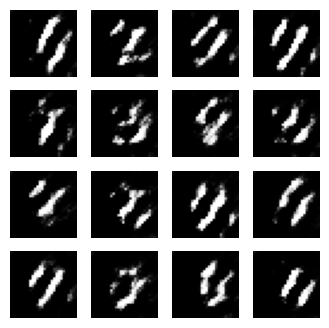
6%|▌ | 6/100 [01:34<21:43, 13.87s/it]Época 6, Pérdida Generador: 0.8549, Pérdida Discriminador: 1.2938 7%|▋ | 7/100 [01:54<24:50, 16.03s/it]Época 7, Pérdida Generador: 0.9241, Pérdida Discriminador: 1.2403 8%|▊ | 8/100 [02:05<22:08, 14.44s/it]Época 8, Pérdida Generador: 0.9121, Pérdida Discriminador: 1.2696 9%|▉ | 9/100 [02:16<20:17, 13.38s/it]Época 9, Pérdida Generador: 0.9511, Pérdida Discriminador: 1.1447
Época 10, Pérdida Generador: 0.9949, Pérdida Discriminador: 1.2076
11%|█ | 11/100 [02:39<18:09, 12.24s/it]Época 11, Pérdida Generador: 0.9860, Pérdida Discriminador: 1.2167 12%|█▏ | 12/100 [02:50<17:29, 11.93s/it]Época 12, Pérdida Generador: 0.9554, Pérdida Discriminador: 1.1741 13%|█▎ | 13/100 [03:01<17:00, 11.73s/it]Época 13, Pérdida Generador: 0.9995, Pérdida Discriminador: 1.1283 14%|█▍ | 14/100 [03:13<16:40, 11.64s/it]Época 14, Pérdida Generador: 1.0476, Pérdida Discriminador: 1.1429
Época 15, Pérdida Generador: 1.1402, Pérdida Discriminador: 1.0614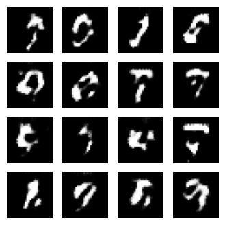
16%|█▌ | 16/100 [03:36<16:14, 11.60s/it]Época 16, Pérdida Generador: 1.0918, Pérdida Discriminador: 1.1061 17%|█▋ | 17/100 [03:47<15:58, 11.55s/it]Época 17, Pérdida Generador: 1.1592, Pérdida Discriminador: 1.0873 18%|█▊ | 18/100 [03:59<15:43, 11.50s/it]Época 18, Pérdida Generador: 1.1705, Pérdida Discriminador: 1.0983 19%|█▉ | 19/100 [04:10<15:28, 11.46s/it]Época 19, Pérdida Generador: 1.1818, Pérdida Discriminador: 1.0607
Época 20, Pérdida Generador: 1.2809, Pérdida Discriminador: 0.9924
21%|██ | 21/100 [04:42<17:38, 13.40s/it]Época 21, Pérdida Generador: 1.2353, Pérdida Discriminador: 1.0174 22%|██▏ | 22/100 [04:54<16:40, 12.83s/it]Época 22, Pérdida Generador: 1.1974, Pérdida Discriminador: 1.0726 23%|██▎ | 23/100 [05:05<15:59, 12.46s/it]Época 23, Pérdida Generador: 1.2296, Pérdida Discriminador: 1.0790 24%|██▍ | 24/100 [05:17<15:25, 12.17s/it]Época 24, Pérdida Generador: 1.2837, Pérdida Discriminador: 1.0146
Época 25, Pérdida Generador: 1.2208, Pérdida Discriminador: 1.0640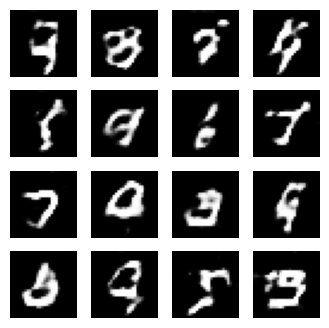
26%|██▌ | 26/100 [05:40<14:39, 11.89s/it]Época 26, Pérdida Generador: 1.1413, Pérdida Discriminador: 1.0985 27%|██▋ | 27/100 [05:52<14:16, 11.73s/it]Época 27, Pérdida Generador: 1.1096, Pérdida Discriminador: 1.1574 28%|██▊ | 28/100 [06:12<17:13, 14.35s/it]Época 28, Pérdida Generador: 1.1044, Pérdida Discriminador: 1.1458 29%|██▉ | 29/100 [06:23<15:56, 13.48s/it]Época 29, Pérdida Generador: 1.0831, Pérdida Discriminador: 1.1524
Época 30, Pérdida Generador: 1.0313, Pérdida Discriminador: 1.1856
31%|███ | 31/100 [06:47<14:26, 12.56s/it]Época 31, Pérdida Generador: 1.0002, Pérdida Discriminador: 1.2063 32%|███▏ | 32/100 [07:07<16:55, 14.93s/it]Época 32, Pérdida Generador: 0.9955, Pérdida Discriminador: 1.2053 33%|███▎ | 33/100 [07:28<18:31, 16.59s/it]Época 33, Pérdida Generador: 0.9735, Pérdida Discriminador: 1.2122 34%|███▍ | 34/100 [07:39<16:33, 15.05s/it]Época 34, Pérdida Generador: 0.9659, Pérdida Discriminador: 1.2332
Época 35, Pérdida Generador: 1.0457, Pérdida Discriminador: 1.2136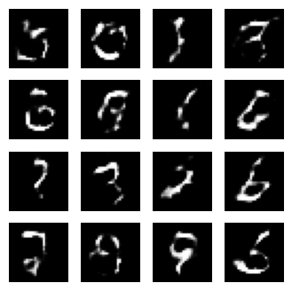
36%|███▌ | 36/100 [08:03<14:13, 13.34s/it]Época 36, Pérdida Generador: 1.1171, Pérdida Discriminador: 1.1412 37%|███▋ | 37/100 [08:14<13:25, 12.79s/it]Época 37, Pérdida Generador: 0.9750, Pérdida Discriminador: 1.2220 38%|███▊ | 38/100 [08:35<15:35, 15.10s/it]Época 38, Pérdida Generador: 0.9855, Pérdida Discriminador: 1.2063 39%|███▉ | 39/100 [08:46<14:11, 13.96s/it]Época 39, Pérdida Generador: 1.0319, Pérdida Discriminador: 1.1863
Época 40, Pérdida Generador: 0.9484, Pérdida Discriminador: 1.2296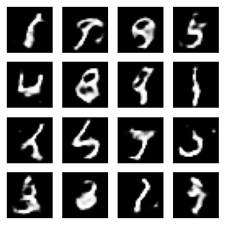
41%|████ | 41/100 [09:09<12:32, 12.75s/it]Época 41, Pérdida Generador: 0.9614, Pérdida Discriminador: 1.2081 42%|████▏ | 42/100 [09:21<11:58, 12.39s/it]Época 42, Pérdida Generador: 0.9513, Pérdida Discriminador: 1.2309 43%|████▎ | 43/100 [09:32<11:30, 12.11s/it]Época 43, Pérdida Generador: 0.9581, Pérdida Discriminador: 1.2194 44%|████▍ | 44/100 [09:44<11:06, 11.90s/it]Época 44, Pérdida Generador: 0.9819, Pérdida Discriminador: 1.2105
Época 45, Pérdida Generador: 1.0339, Pérdida Discriminador: 1.1981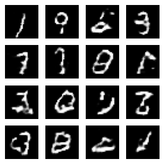
46%|████▌ | 46/100 [10:06<10:30, 11.67s/it]Época 46, Pérdida Generador: 1.0075, Pérdida Discriminador: 1.2052 47%|████▋ | 47/100 [10:18<10:13, 11.57s/it]Época 47, Pérdida Generador: 1.0018, Pérdida Discriminador: 1.2102 48%|████▊ | 48/100 [10:38<12:20, 14.24s/it]Época 48, Pérdida Generador: 1.0056, Pérdida Discriminador: 1.2138 49%|████▉ | 49/100 [10:50<11:23, 13.39s/it]Época 49, Pérdida Generador: 0.9730, Pérdida Discriminador: 1.2131
Época 50, Pérdida Generador: 0.9364, Pérdida Discriminador: 1.2295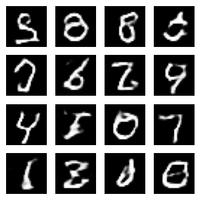
51%|█████ | 51/100 [11:13<10:12, 12.51s/it]Época 51, Pérdida Generador: 0.9337, Pérdida Discriminador: 1.2315 52%|█████▏ | 52/100 [11:25<09:45, 12.20s/it]Época 52, Pérdida Generador: 0.9834, Pérdida Discriminador: 1.2009 53%|█████▎ | 53/100 [11:36<09:22, 11.96s/it]Época 53, Pérdida Generador: 0.9953, Pérdida Discriminador: 1.2180 54%|█████▍ | 54/100 [11:47<09:02, 11.78s/it]Época 54, Pérdida Generador: 0.9605, Pérdida Discriminador: 1.2223
Época 55, Pérdida Generador: 0.9466, Pérdida Discriminador: 1.2293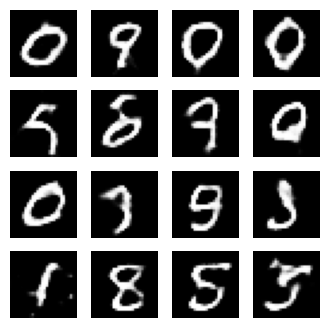
56%|█████▌ | 56/100 [12:10<08:30, 11.60s/it]Época 56, Pérdida Generador: 0.9443, Pérdida Discriminador: 1.2218 57%|█████▋ | 57/100 [12:22<08:16, 11.54s/it]Época 57, Pérdida Generador: 0.9257, Pérdida Discriminador: 1.2333 58%|█████▊ | 58/100 [12:33<08:03, 11.50s/it]Época 58, Pérdida Generador: 0.9555, Pérdida Discriminador: 1.2351 59%|█████▉ | 59/100 [12:44<07:50, 11.48s/it]Época 59, Pérdida Generador: 0.9726, Pérdida Discriminador: 1.2217
Época 60, Pérdida Generador: 0.9974, Pérdida Discriminador: 1.2031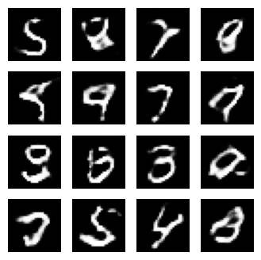
61%|██████ | 61/100 [13:08<07:31, 11.57s/it]Época 61, Pérdida Generador: 0.9703, Pérdida Discriminador: 1.2354 62%|██████▏ | 62/100 [13:19<07:17, 11.52s/it]Época 62, Pérdida Generador: 0.9694, Pérdida Discriminador: 1.2184 63%|██████▎ | 63/100 [13:31<07:04, 11.48s/it]Época 63, Pérdida Generador: 0.9605, Pérdida Discriminador: 1.2280 64%|██████▍ | 64/100 [13:51<08:30, 14.18s/it]Época 64, Pérdida Generador: 0.9584, Pérdida Discriminador: 1.2260
Época 65, Pérdida Generador: 0.9559, Pérdida Discriminador: 1.2218
66%|██████▌ | 66/100 [14:14<07:16, 12.83s/it]Época 66, Pérdida Generador: 0.9472, Pérdida Discriminador: 1.2209 67%|██████▋ | 67/100 [14:35<08:19, 15.12s/it]Época 67, Pérdida Generador: 0.9447, Pérdida Discriminador: 1.2338 68%|██████▊ | 68/100 [14:46<07:28, 14.03s/it]Época 68, Pérdida Generador: 0.9546, Pérdida Discriminador: 1.2339 69%|██████▉ | 69/100 [14:58<06:50, 13.26s/it]Época 69, Pérdida Generador: 0.9767, Pérdida Discriminador: 1.2187
Época 70, Pérdida Generador: 0.9702, Pérdida Discriminador: 1.2146
71%|███████ | 71/100 [15:21<05:59, 12.38s/it]Época 71, Pérdida Generador: 0.9667, Pérdida Discriminador: 1.2150 72%|███████▏ | 72/100 [15:32<05:38, 12.09s/it]Época 72, Pérdida Generador: 0.9560, Pérdida Discriminador: 1.2209 73%|███████▎ | 73/100 [15:44<05:20, 11.89s/it]Época 73, Pérdida Generador: 0.9615, Pérdida Discriminador: 1.2150 74%|███████▍ | 74/100 [15:55<05:05, 11.73s/it]Época 74, Pérdida Generador: 0.9820, Pérdida Discriminador: 1.2059
Época 75, Pérdida Generador: 0.9470, Pérdida Discriminador: 1.2319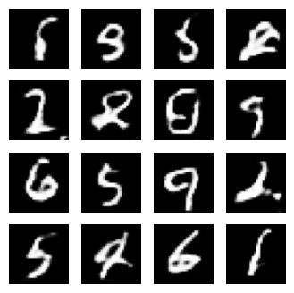
76%|███████▌ | 76/100 [16:18<04:38, 11.61s/it]Época 76, Pérdida Generador: 0.9365, Pérdida Discriminador: 1.2333 77%|███████▋ | 77/100 [16:29<04:25, 11.54s/it]Época 77, Pérdida Generador: 0.9290, Pérdida Discriminador: 1.2355 78%|███████▊ | 78/100 [16:41<04:12, 11.50s/it]Época 78, Pérdida Generador: 0.9248, Pérdida Discriminador: 1.2340 79%|███████▉ | 79/100 [16:52<04:00, 11.47s/it]Época 79, Pérdida Generador: 0.9725, Pérdida Discriminador: 1.2132
Época 80, Pérdida Generador: 1.0410, Pérdida Discriminador: 1.2125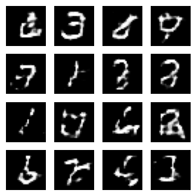
81%|████████ | 81/100 [17:24<04:29, 14.20s/it]Época 81, Pérdida Generador: 1.0251, Pérdida Discriminador: 1.1996 82%|████████▏ | 82/100 [17:36<04:00, 13.35s/it]Época 82, Pérdida Generador: 0.9604, Pérdida Discriminador: 1.2264 83%|████████▎ | 83/100 [17:47<03:37, 12.79s/it]Época 83, Pérdida Generador: 0.9474, Pérdida Discriminador: 1.2311 84%|████████▍ | 84/100 [17:59<03:18, 12.42s/it]Época 84, Pérdida Generador: 0.9290, Pérdida Discriminador: 1.2374
Época 85, Pérdida Generador: 0.9173, Pérdida Discriminador: 1.2399
86%|████████▌ | 86/100 [18:22<02:47, 11.97s/it]Época 86, Pérdida Generador: 0.9229, Pérdida Discriminador: 1.2354 87%|████████▋ | 87/100 [18:33<02:33, 11.79s/it]Época 87, Pérdida Generador: 0.9451, Pérdida Discriminador: 1.2337 88%|████████▊ | 88/100 [18:44<02:19, 11.66s/it]Época 88, Pérdida Generador: 0.9924, Pérdida Discriminador: 1.2280 89%|████████▉ | 89/100 [18:56<02:07, 11.57s/it]Época 89, Pérdida Generador: 1.0030, Pérdida Discriminador: 1.2119
Época 90, Pérdida Generador: 0.9670, Pérdida Discriminador: 1.2227
91%|█████████ | 91/100 [19:19<01:44, 11.60s/it]Época 91, Pérdida Generador: 0.9539, Pérdida Discriminador: 1.2228 92%|█████████▏| 92/100 [19:31<01:32, 11.55s/it]Época 92, Pérdida Generador: 0.9420, Pérdida Discriminador: 1.2367 93%|█████████▎| 93/100 [19:42<01:20, 11.51s/it]Época 93, Pérdida Generador: 0.9386, Pérdida Discriminador: 1.2362 94%|█████████▍| 94/100 [19:53<01:08, 11.49s/it]Época 94, Pérdida Generador: 0.9662, Pérdida Discriminador: 1.2249
Época 95, Pérdida Generador: 0.9685, Pérdida Discriminador: 1.2224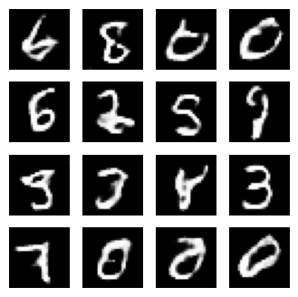
96%|█████████▌| 96/100 [20:16<00:45, 11.49s/it]Época 96, Pérdida Generador: 0.9621, Pérdida Discriminador: 1.2319 97%|█████████▋| 97/100 [20:28<00:34, 11.46s/it]Época 97, Pérdida Generador: 0.9664, Pérdida Discriminador: 1.2291 98%|█████████▊| 98/100 [20:39<00:22, 11.44s/it]Época 98, Pérdida Generador: 0.9520, Pérdida Discriminador: 1.2372 99%|█████████▉| 99/100 [20:51<00:11, 11.42s/it]Época 99, Pérdida Generador: 0.9452, Pérdida Discriminador: 1.2367
Época 100, Pérdida Generador: 0.9366, Pérdida Discriminador: 1.2360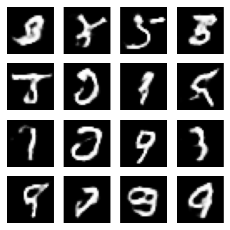
100%|██████████| 100/100 [21:11<00:00, 12.72s/it]Entrenamiento finalizado.Análisis de Resultados
Visualización de las Pérdidas La visualización de las pérdidas es fundamental para diagnosticar el entrenamiento de una GAN. En el siguiente gráfico, podemos ver cómo la pérdida del generador y del discriminador interactúan a lo largo del tiempo.
plot_losses(gen_losses, disc_losses)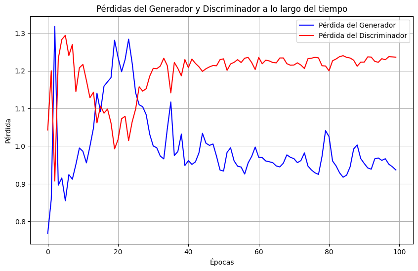
Análisis del Gráfico:
Comportamiento Fluctuante: Es normal que las pérdidas de una GAN no disminuyan suavemente. Las fluctuaciones muestran la lucha constante entre el generador y el discriminador. Si una pérdida baja, la otra tiende a subir.
Equilibrio: Un entrenamiento exitoso se manifiesta con las pérdidas oscilando alrededor de un valor estable. Esto indica que el sistema ha alcanzado un equilibrio, donde el generador es lo suficientemente bueno para engañar al discriminador en un 50% de las veces, y el discriminador es lo suficientemente bueno para detectar los datos falsos el 50% de las veces.
Problemas de Entrenamiento: Si una pérdida se va a cero mientras la otra se dispara, puede ser una señal de colapso del modo (“mode collapse”) o que una red ha superado a la otra.
Generación Final de Imágenes
Finalmente, generamos una cuadrícula de imágenes para ver la calidad de los resultados después de 50/100 épocas de entrenamiento. La visualización de las pérdidas confirma que el sistema se ha mantenido en un equilibrio competitivo, lo que se traduce en la generación de dígitos. Durante entreneamiento pudimos observar como la red mejora durante el tiempo sin embargo, para optener mejores resultados es necesario redes mas complejas y mas tiempo de ejecucion
print("Imágenes generadas al final del entrenamiento:")
display_images(generator, latent_dim=LATENT_DIM)Imágenes generadas al final del entrenamiento: